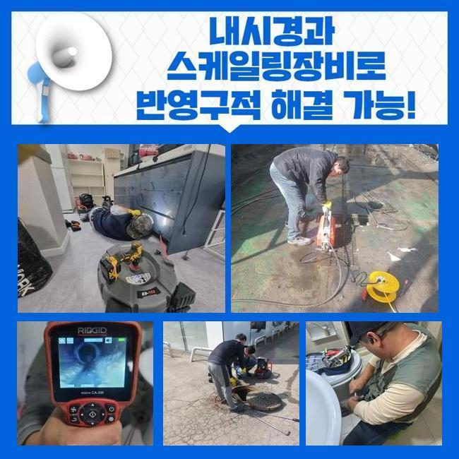
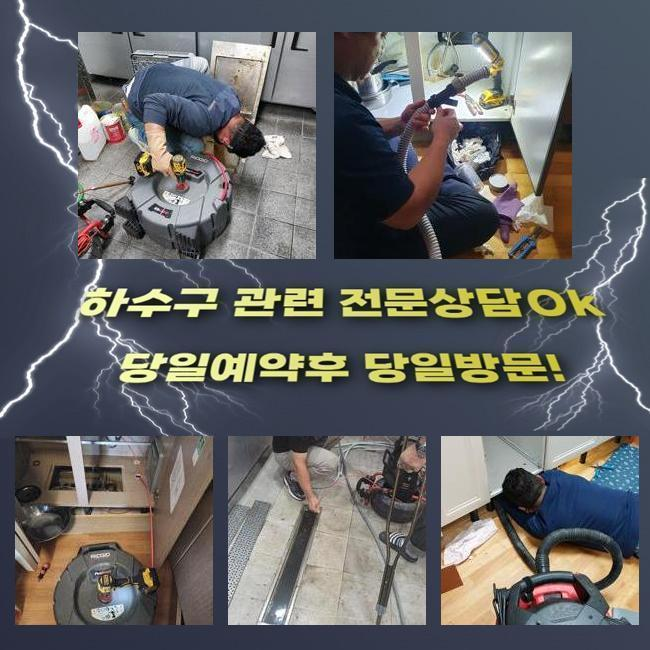
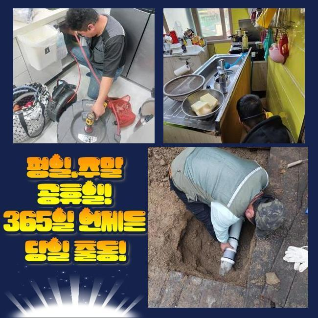
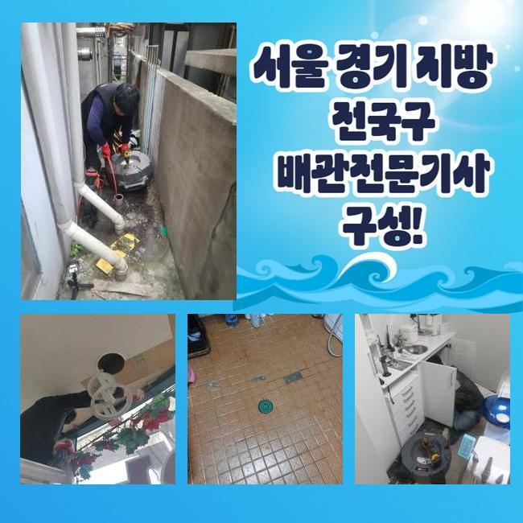
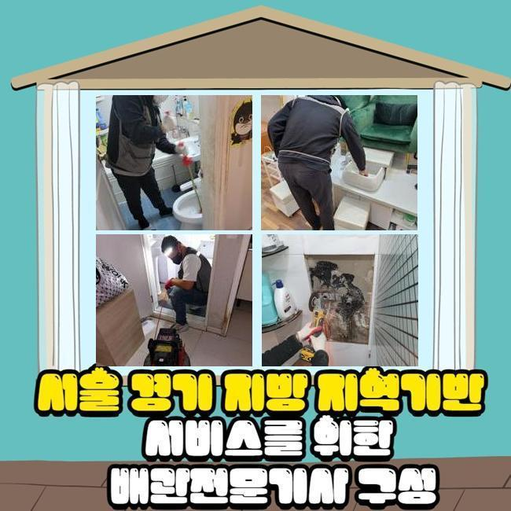
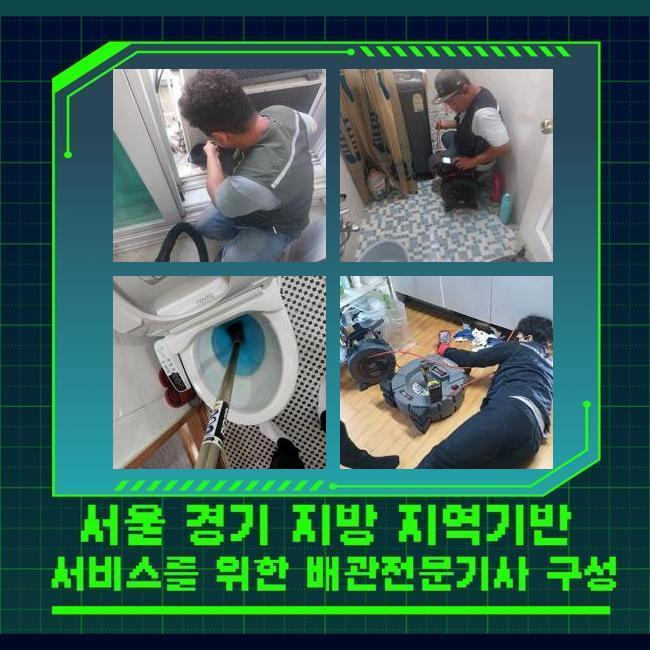
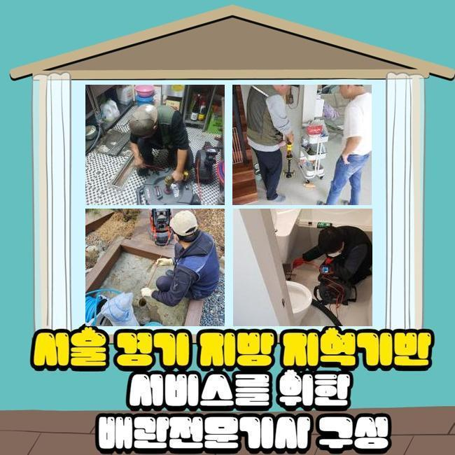

🏠 안산 중앙동화장실뚫음 선부동 하수구뚫어주는업체 배관막힘누수업체
용인시 처인구 배관막힘 전문 시공 후기

📋 작업 개요
- 위치: 용인시 처인구, 수원시 영통구, 화성시 동탄
- 서비스 유형: 배관막힘, 누수수리, 고압세척, 내시경점검
- 작업 일시:
- 업체명: 하수구수사대 (010-5615-2118)
🔍 문제 상황
안산 중앙동화장실뚫음 선부동 하수구뚫어주는업체 배관막힘누수업체
하수구의 장애를 시작으로 집수정의 물이 범람하면 어떤 수로 극복해 나갈지 정보가 부족한 분들이 많을거예요
인터넷만 뒤적이다가 관련한 정보가 워낙 부족하다보니 방치하다가 사건이 악화되어 버리고 마는 겁니다
오늘 처리해 드린 곳은 막힘에 따른 불편함으로 큰 고충을 겪고 계시던 한 다중주택이었습니다
여기는 단독주택이 아니고 단지형태로 다수의 세대가 동시에 물을 쓰기 때문에 하수 곤란이 빈번한 곳이었습니다
비정상적으로 하수구 시설이 변화하더라도 이러한 특성상 명쾌하게 어느 영역의 하수구에 오류가 발생했을 것이라고 단정지을 수 없습니다
막힘이 도래한 시발점을 잡아내는 활동에 오랜 시간이 소요될 때가 많아요
이번에 방문한 빌라에 머무르고 계시는 구성원분들이 업무를 많이 도와주셔서 하수관의 복구 프로세스를 조금 더 앞당겨서 완수할 수 있었습니다
여러분들이 사용하는 집수정 검사도 필요하고 꼼꼼하게 관로를 수선해드리려면 물 공급도 잠깐 끊기니 여러 명이 힘들어집니다
내부의 많은 거주자분들께서 물을 재차 공급받아서 일상을 다시 보낼 수 있어야하니 어떻게든 여유 시간을 내어 처리해야 합니다

🔎 원인 분석
💡 전문가 진단: 정밀 진단 장비를 사용하여 슬러지의 고착 여부를 판명하고 타격/세척 작업을 실시했습니다.
시공의 시작을 공지하고 하수구의 문제가 피어오른 포인트인 지하실 근방의 관로를 두루 조사하기 시작하였습니다
엄청난 양의 기름때가 하수관의 내측으로 자욱하게 적재 되어있는 답답한 형상을 감별해 내게 되었습니다
여러 실내에서 물과 함께 내려가는 노폐물들의 전량은 이 부근을 지나치면서 야외의 집수정으로 연결되게 됩니다
그러나 이 사이공간이 점도가 높은 슬러지와 여러 오염원으로 가득 메워지다보니 정상 폐수가 되지 못하고 그러다보니 역행 현상까지도 발현된 상황이었죠
주민들께서 집회를 거치시고 오래 재보시다가 믿을만하다 싶은 저희에게 업무 대행을 맡겨주신 사례였습니다
적당한 막힘을 넘어선 수준이라면 시간이 조금 더 소요되더라도 원큐에 설비를 되돌려주는 진정한 기술자를 구하는 게 재발을 피하는 방법이란 걸 아시기에 그 부분을 애쓰셨다고 하셨습니다
지하실로 진입하게 되는 계단 몇 칸으로도 물이 울컥 올라왔던 자국을 눈치채게 되었는데 저희들이 방문하기도 전에 미끄러질까봐 계단을 주민분들이 물기 처리를 해주신 듯 했어요
이러한 배려심으로 보다 빨리 업무를 개시할 수 있다보니 전체적인 작업 시간을 줄여서 진행할 수 있었습니다
관측도구인 내시경을 파이프를 따라 배치하여 내측을 실시간으로 체크업을 하면서 시공을 어찌 해결해줄 것인지 노선을 만들게 되었습니다
스케일링 도구인 샤프트로 파이프 내면에 접착된 끈적한 슬러지 덩어리를 잔여물 없이 청소 해가며 케어를 해줬습니다
집수정과 연계된 지점까지 자세히 살펴봐준 이후에 꼼꼼한 자세로 승부하면서 순서에 맞게 정리해 나가는 것입니다

🔧 작업 과정
수위가 상승한 배관의 처리를 하려고 보면 대체로 기름기로 빼곡하게 덮혀있을 모습일 때가 많으니 더 신경써서 관로 청소를 담당해야 할 테죠
잘게 썰린 기름 슬러지는 하나도 빠트리지 말고 관로에서 구출해내야만 향후 비슷한 사고를 피할 수 있게 됩니다
특히 유분함량이 높은 찌꺼기는 똘똘 말리는 성향이 있어서 다시 막힘이 도래할 위험성을 품고 있으니 유의할 필요가 있겠죠
야외의 맨홀 뚜껑을 개방해보니 기름때가 누적되어올라 있다는 점을 볼 수가 있었는데요
기름 슬러지의 양이 방대하면 통수가 당연히 이뤄지지 않으며 부패한 악취도 엄청나게 풍겨져 나오기 마련입니다
후각이 무딘 편이라서 불쾌지수가 높지 않았던 고객님도 고온다습한 계절이 오면 대폭 증가한 곰팡이 냄새로 지독하게 불쾌한 감정을 겪으시게 될 거에요
설비를 관리해드리는 모습을 주민분들도 함께 주의깊게 보시면서 제 이야기를 들어주셨습니다
키친타올로 기름을 없애고 찌꺼기도 잘 걸러주고 한 가구에도 여러시설들이 배수로를 각자의 집에서 청소를 자주자주 청결하게 해주자고 논의하고 계셨네요
이번에 방문하게 된 빌라에 달린 전체적인 집수정들을 스케일링 해주었습니다
지어진 지 오래된 건물에 여러 세대가 같이 살고 있는데 한 차례도 배수구 전문 청소를 상세하게 받았던 적이 없어서 심각도가 더 짙어진겁니다
장기간 형성된 찌꺼기들도 매우 많은 양이 발생했고 이와 같은 사연 때문에 정화작업에도 꽤 오랜 시간을 소비했어요
재발 없는 명쾌한 결과물로 안정적인 사용환경을 만들어드리려 소홀한 영역은 없는가 계속해서 체킹을 하면서 청소 서비스를 해드렸습니다
통행하시던 행인분들도 작업을 끌어가는 모습에서 진심을 느끼셨는지 나중에 하수구가 고장나서 맡기려면 의뢰를 어떤 번호로 걸어야하는지 호기심어린 자세로 물어보시면서 연락처를 저장해두기도 하시더라고요
건물에 설치된 배관들과 집수정까지 마비된 애로사항이 있던 배관의 세척을 마감지으면서 세정이 잘 이루어져서 폐수가 원만히 달성되었는 지 점검하는 테스트도 걸어줍니다
수도밸브를 열어주고 치워준 관로 안으로 저희의 카메라를 부드럽게 밀어넣고 얼마나 유속이 좋은지 확인했네요
심층부까지 존재하는 집수정이라서 내시경을 봐도 밑바닥까지 인식되지는 않으나 청소를 완수한 곳을 살펴보면 혼탁한 기름덩어리와 하수가 같이 혼합되어서 나가지는 상태를 인식할 수 있었답니다
혹시나 모르니 집수정 근처에 분출될지 모르는 기름물질들을 필터링해 줄 수 있는 체를 미리 받쳐두고 하수를 쭉 부어서 작은 불순물까지도 모두 분리하는 작업도 담당했어요추출하는 작업도 도맡았습니다


✅ 작업 완료
여러 세대가 모여있는 곳은 어떠한 하나의 배수로에서 잘못된 측면이 있다고 확실하게 지적할 수 없기때문에 여러명이 동시에 하수 설비의 안전에 노력을 아끼지 않아야 합니다
이번에 만나게 된 주민모임의 임원분도 빌라차원에서 공지를 해서 저희가 전한 하수구 대응법과 사전 조치법을 널리 알려 더욱 살기에 편안한 조건으로 유지하겠다는 포부를 밝히셨어요
여러 가구에서 활용하다보니 언젠가 한번은 하수구에 삐걱거림이 생기긴 하겠지만 규칙적으로 재발되지 않게끔 사전차단할 수 있는 예방법이 존재하기 때문이죠
손이 닿는 위치의 하수구에 두꺼운 입자의 고체들이 침입하지 않도록 늘 주시를 해야하며 건물 안에 머무르는 모든 사람들이 적극 참여해야 합니다
집수정까지 마비된 인해서 여러 고충을 겪고 계신분들이라면 한시라도 빠르게 전문가의 방문으로 마음 놓고 사용하셨으면 합니다!




⚠️ 하수구 배관 막힘 예방 및 관리 가이드
- ✅ 머리카락, 비닐, 물티슈 등 물에 분해되지 않는 이물질은 절대 흘려보내지 마세요.
- ✅ 기름기 많은 식기는 설거지 전 키친타올로 먼저 기름때를 닦아내세요.
- ✅ 주기적으로 배수구에 뜨거운 물을 가득 부어주어 유지방 고착을 방지하세요.
- ✅ 작업 후 1년 이내 재발 시 무상 A/S 보증 서비스를 제공합니다.
💡 핵심 정리
- 확실한 장비 작업(내시경 점검 및 샤프트 스케일링)으로 원인을 뿌리 뽑습니다.
- 작업 후 1년 이내에 동일한 부위 재발 시 100% 무상 A/S 서비스를 보장합니다.
- 서울 · 경기 · 인천 전 지역에 24시간 언제든 긴급 출동할 수 있도록 항시 대기 중입니다.
❓ 자주 묻는 질문 (FAQ)
🚨 용인시 처인구 배관막힘 문제로 고민이신가요?
정확한 원인 진단과 확실한 시공으로 재발 없는 해결을 약속드립니다.
24시간 긴급 출동 | 서울 · 경기 · 인천 전지역 | 1년 내 재발 시 무상 A/S